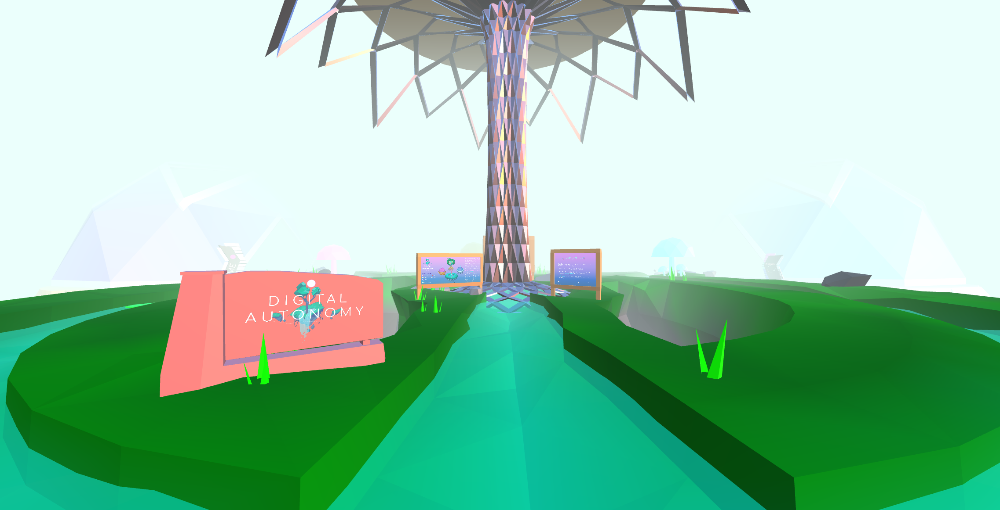

Lauren Chun
Digital Autonomy Lobby
Three.js: New Art City, 2021
Description
Digital Autonomy, an exhibition of diigtal photography, video, painting, sculpture, and unclassifiable media hosted on New Art City that explores the multitudes of interdepdent in May of 2021. that explores the multitude of interdepdent signals crisscrossing the spatial-temporal void. While never physicall co-present, artists in their
culminating semester of their BFA degree in Digital Media Art came together in digital spaces and found synaptic resonance; a cognitive sympathy fostered by digital signals.


My team was tasked to create the layout for the lobby. We worked along side two other teams to create the lobby.